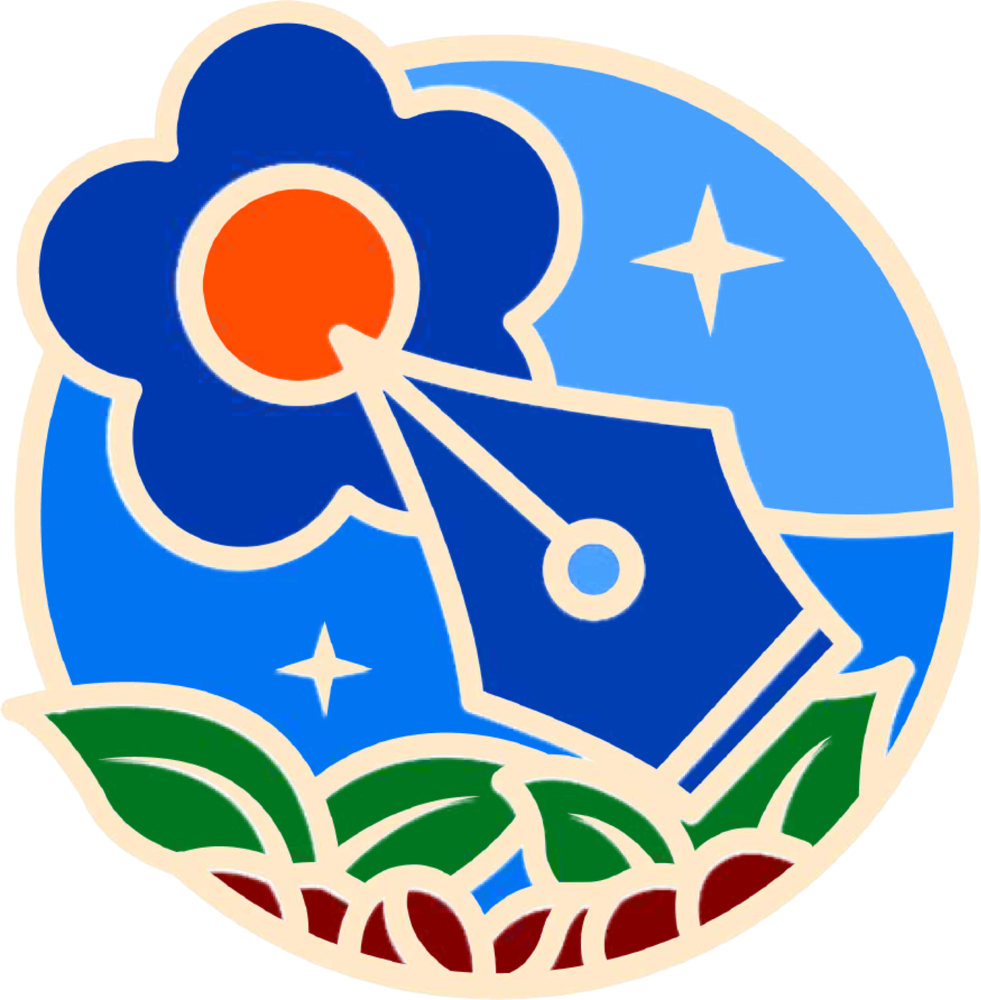
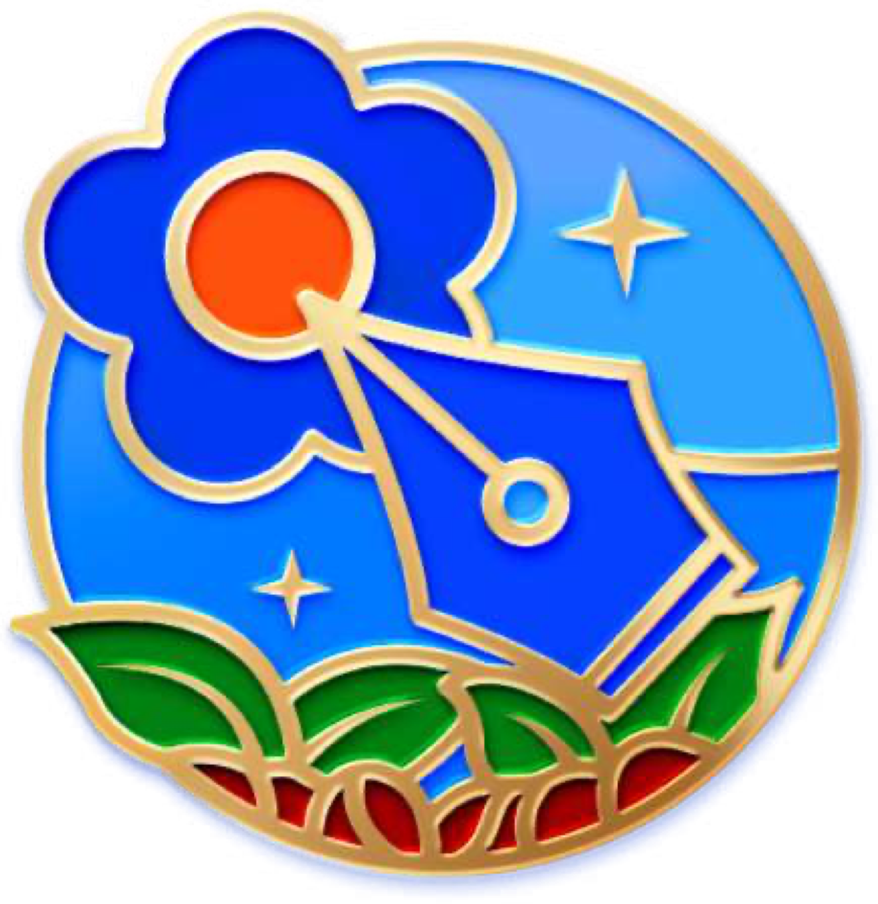
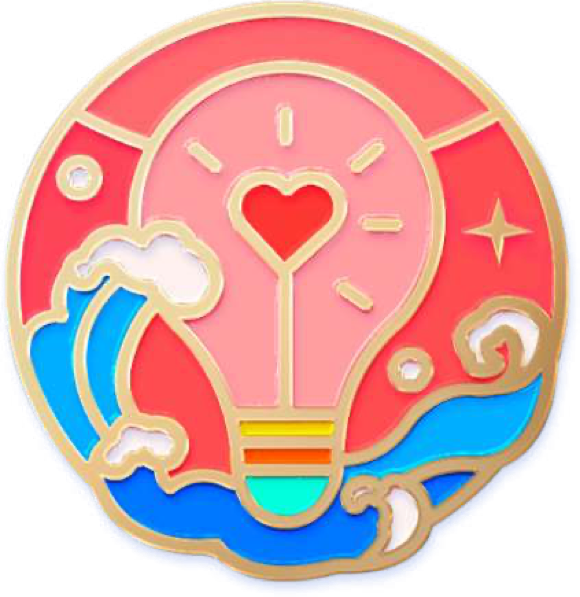
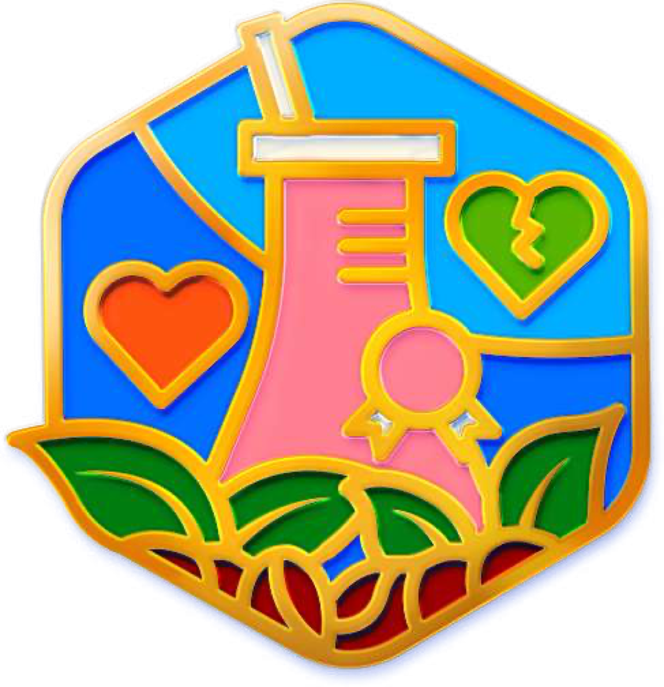
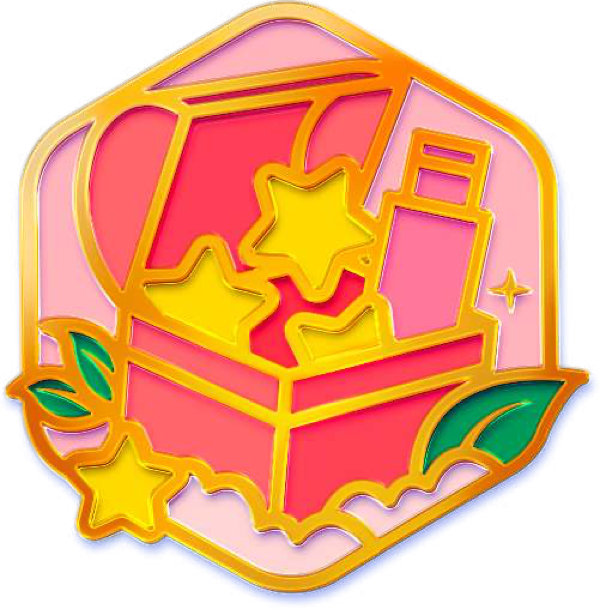
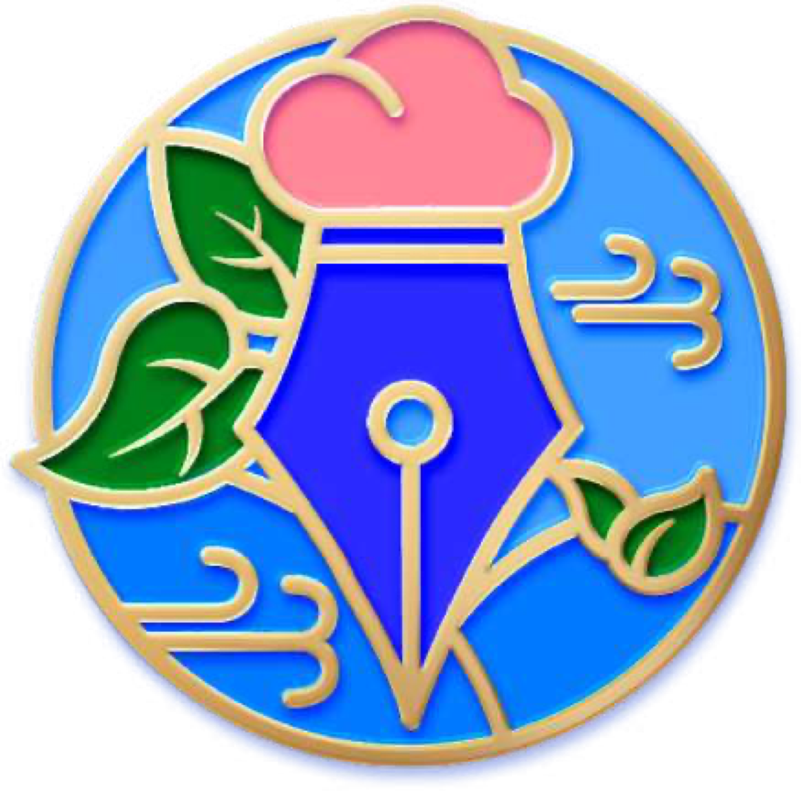
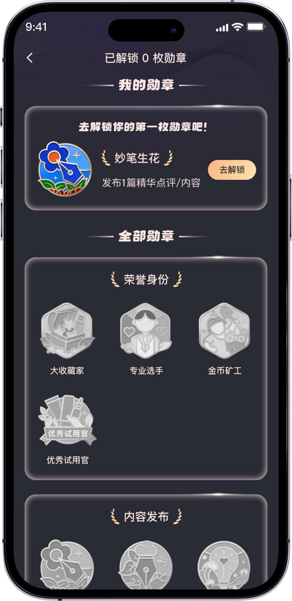
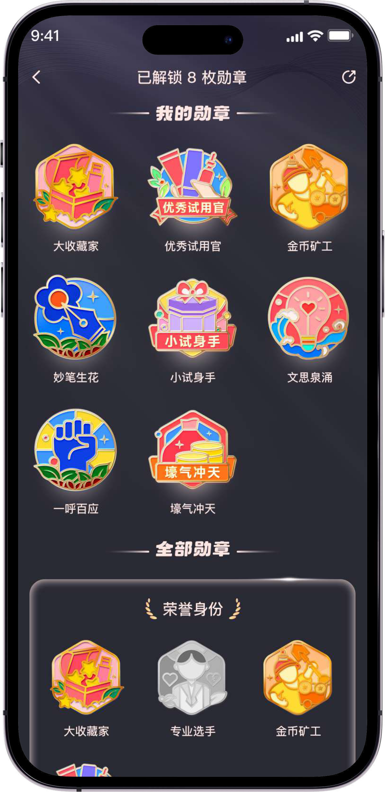

01 / LINE ART
线稿以钢笔、花朵、星光与叶片建立内容创作主题的基础轮廓。
为美丽修行构建成就勋章视觉系统。以统一的金属描边、明亮珐琅配色和植物纹样串联不同任务主题，完成从图形草案、色彩方案到细节成稿，并将勋章接入 App 的解锁与陈列页面。
围绕同一枚内容创作主题勋章，依次呈现基础构图、色块尝试与完成细节。

以钢笔、花朵、星光与叶片建立内容创作主题的基础轮廓。

在同一构图中测试蓝、绿、红等色块关系，建立主题层级。

完善金属描边与光影层次，让勋章在小尺寸中保持清晰。
在统一轮廓与材质语言下，为收藏、试用、内容发布、互动反馈等不同任务设计可识别的主题图标。




页面以“我的勋章”突出个人成就：未解锁时提供下一步行动引导，解锁后将彩色勋章置于首屏，并保留全部勋章的收集进度。


勋章系统以任务驱动用户参与，设计兼顾单枚识别、系列一致性与移动端小尺寸展示。